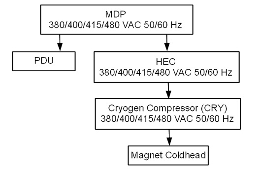
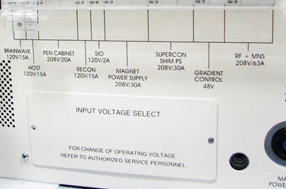

- 00000018WIA306D4E20GYZ
- id_131073703.6
- Jan 14, 2021 8:35:43 PM
Power On Sequencing
Prerequisites
| Required persons | Preliminary requirements | Procedure | Finalization |
|---|---|---|---|
| 1 | Not Applicable | 15-60 minutes | Not Applicable |
| Item | Quantity | Effectivity | Part number | Manufacturer |
|---|---|---|---|---|
| Digital Volt Meter (DVM) | 1 | - | - | - |
| ||||
About this task

Main Components
The following provides an overview of each main component in this sequence:
-
Heat Exchange Cabinet (HEC)
The HEC contains a control power transformer that is set to 480 Vac. For sites with a different customer-supplied voltage, the control power transformer wiring switch will need to be changed. The HEC contains the power interface to the Cryogen Cooler Compressor (CRY). In order to power the coldhead after magnet delivery, the power cabling will need to be wired from the MDP to the HEC, and from the HEC to the Cryo Cooler. The power cable between the MDP and the HEC will be customer supplied and installed.
-
Cryogen Cooler Compressor (CRY)
The CRY receives power from the HEC. The coldhead power cable will need to be installed to power the coldhead.
-
Power Distribution Unit (PDU)
The PDU is setup for 480 Vac by default. For sites with a different customer supplied voltage, the power wiring will need to be changed. The power cable between the MDP and the PDU will be customer supplied and installed. The overload and short-circuit settings are dependent upon the voltage input and may need to be changed if the input voltage is changed. Not all PDUs need overload and short circuit current settings adjusted. Refer to installed PDU's manual to determine adjustment requirements.
-
Power & Gradient Cabinet (PGR)
The PGR houses the eXtreme Gradient Amplifiers (XGA or XG2), eXtreme Power Supplies (XPS or XPS2) and the PDU. The gradient cable connections to the XGA or XG2 for each axis can be accessed here.
List of Procedures
This document includes the following Power On Checklist procedures:
- Confirm the Heat Exchange Cabinet (HEC) Voltage Selection
- Confirm Internal Power Wiring to the Power Distribution Unit (PDU)
- Confirm Overload and Short Circuit Trip Settings for the PDU Input Circuit Breaker (Pre-DVapps PDU 5140621)
- Check the gradient cable connection at the PGR
Confirm Emergency Off functionality (E-Off)
About this task
Procedure
- Click the Tools button and choose System Shutdown from the menu.Note Shutting down the system as indicated above also shuts down the ICNs.
Figure 2. Service tools menu 
Emergency off
About this task
The AC power for the Magnet Monitor is not controlled by the Emergency Off button.
Procedure
Finalizing Emergency Off functionality (E-Off) check
About this task
Procedure
Confirm Heat Exchange Cabinet (HEC) Voltage Selection
Procedure
- If the switch is not in the correct position, change the switch position.
Figure 11. HEC Voltage Selection Switch 
Confirm Internal Power Wiring to the Power Distribution Unit (PDU)
About this task
The PDU is shipped with the default voltage setting of 480 Vac.
Procedure
- Remove the small cover plate which is held in place by two screws.
Figure 12. Input Voltage Select Small Cover (79 kVA) 
Figure 13. Input Voltage Select Small Cover (73 kVA) 
- Confirm that the three Input Voltage Selection Terminal Blocks are wired in the correct configuration. If the power connections are not configured properly, ensure that the proper personnel correct the wiring. See PDU Operation and Maintenance Manual for additional details.
Figure 14. Input Voltage Selection - Set at 480 Vac 
Confirm Overload and Short Circuit Trip Settings for the PDU Input Circuit Breaker
About this task
Note: Overload and Short Circuit Trip Settings only apply to pre-DVapps PDU 5140621. The overload and short circuit trip settings for the Input Circuit Breaker must be set to the correct values corresponding to the input voltage.
Procedure
- Confirm that the switches immediately under the letter “L” are configured correctly. The illustration below shows the position of the DIP switches for each input voltage.
Figure 15. Circuit Breaker DIP Switch Settings (Black=ON / White=OFF) 
Check Gradient Cable Connection at PGR
Procedure
Finalization
Finalization
Select Installation Calibration Wizard checklist items that were confirmed as completed.